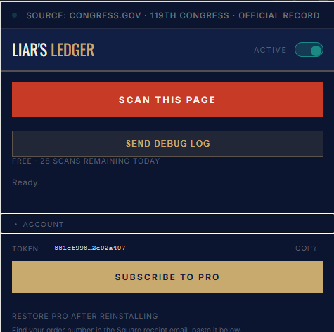

Section 03 · Pricing
Simple, honest pricing.
Free for readers. Pro for power users. No hidden fees, no data sold.
Free
- See the truth instantly. Real-time politician detection and official roll-call votes, direct bill links, and interest group affiliations.
Pro
- You believe politicians should be held accountable. Everything in Free, plus up to 100 scans per day, an AI-generated "Verdict" that compares article claims to the voting record, and early access to new visual features.

Open extension → Account panel → Subscribe to Pro
Support
- Keep the truth free. No perks are gated behind this tier. Your contribution simply keeps the Free tier's daily limit high and helps cover server and AI costs.
Common questions
Pricing and billing questions are below. For everything else, including how detection works, sourcing, and privacy, see the full FAQ.
How does the free daily limit work?
Each installation gets a random anonymous token. Free tier's daily scan allowance is dynamic: it starts at 30 scans/day at launch and scales down as the user base grows, to keep server costs sustainable. Pro gets a separate, flat allowance of 100 scans/day that doesn't scale down. Both reset at midnight UTC, and the current limit is always shown in the extension popup.
What is an "anonymous token"?
A random UUID generated locally on first install. It is not linked to your name, email, or any personal information. See the privacy policy for full details.
How does payment work?
Payments are processed by Square. Your card details go directly to Square, and we never see them. Upon successful payment, your token is automatically upgraded to Pro.
Can I cancel anytime?
Yes. Cancel through Square and your Pro access remains until the end of the billing period. After that, your token reverts to Free tier.
I lost my token or reinstalled. How do I get Pro back?
Open the extension popup → Account panel → Restore Pro after reinstalling. Paste the order number from your Square receipt email and your Pro status will be restored to that token automatically. We never collected your email, so we can't look this up for you here on the website. The order number is the only thing that links your payment back to your install.
Is the extension open source?
Yes - github.com/ryanegauthier/liars-ledger. You can audit exactly what data is sent and when.
Support the project
Free to use.
Costs real money to run.
An informed voter is harder to manipulate. Liar's Ledger exists to make the official record as easy to access as the spin. It's free, open source, and built to stay that way, with your help.
Liar's Ledger has no investors, no ads, and no data to sell. Every scan runs through real AI models and official government APIs, and that costs money. Donations and Pro subscriptions are the only thing keeping the free tier alive and the daily limit high. If you believe voters deserve instant, nonpartisan access to their politicians' voting records, this is how you help make that sustainable.
We accept donations through Square and Liberapay. Liberapay is a European, open source, nonprofit platform that processes payments via Mangopay and PayPal.